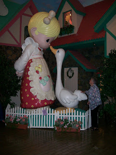

Inspiring!
7/19/2009
I don't know who enjoys the Precious Moments Park and Visitor Center (Cart
Every product ever made on earth begins with someone's idea. What I love most about this place is the way artist Sam Butcher has with intent made it possible to visually see and understand how his art pieces are first inspired, and then how he works them out, first on paper, then as 3-D sculptures where the model piece is refined until he's totally satisfied with the work. Visitors to the park museum are then shown how the pieces are produced in quantity through many handcrafting steps. And finally marketed. I never leave the park without being newly inspired!
{kind=link}
{kind=link}

hage, MO) more, Adelia or me! Over the years we've visited a half dozen times or more, and we stopped by again last week. Adelia's favorite part of the park is the gift shop with its largest selection of Precious Moments products in the world, some available only at that location. I love the museum. We both enjoy the beautiful grounds and the inspirational chapel where there's always something new. I also noticed there's been a definite effort the past couple years to add more attractions for kids and young families.Every product ever made on earth begins with someone's idea. What I love most about this place is the way artist Sam Butcher has with intent made it possible to visually see and understand how his art pieces are first inspired, and then how he works them out, first on paper, then as 3-D sculptures where the model piece is refined until he's totally satisfied with the work. Visitors to the park museum are then shown how the pieces are produced in quantity through many handcrafting steps. And finally marketed. I never leave the park without being newly inspired!